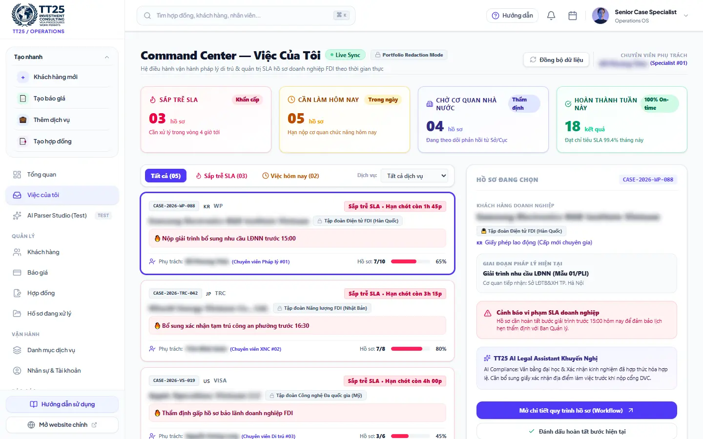
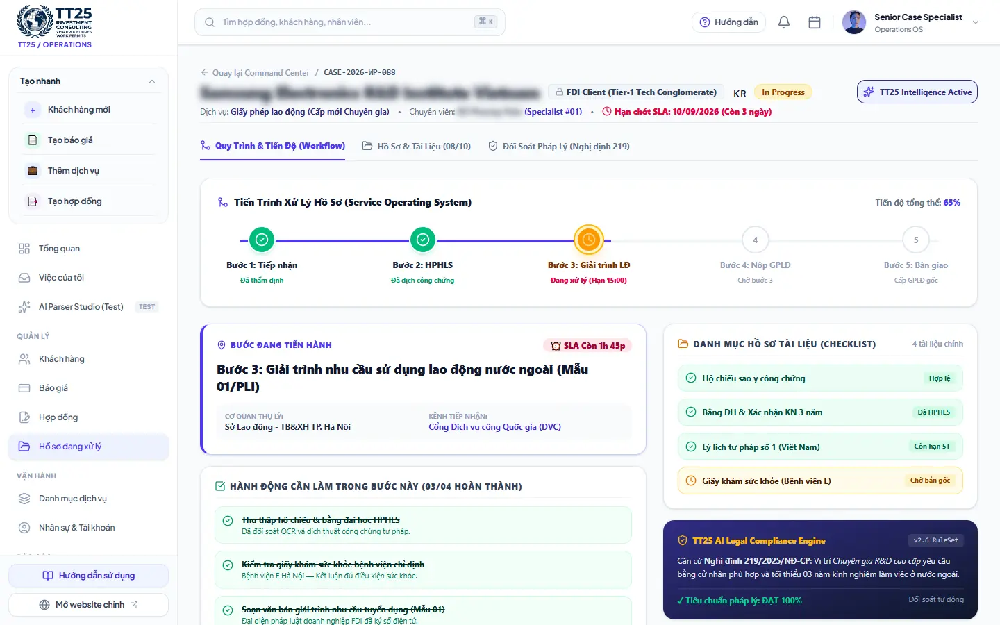

01
Public Web
VI–EN–ZH SSR delivery, responsive desktop/mobile layouts, deep Schema.org markup, hreflang alternates, canonical redirects, and zero-404 fallback behavior.
One operating system connecting the public website, content administration, case operations, legal compliance, and production infrastructure.
We handle compliance. You focus on growth.
TT25 was designed as an end-to-end operating model for corporate immigration services—not simply a website or database. Public acquisition, content publishing, client records, quotations, contracts, case execution, document controls, and legal checks live within one coherent product architecture.
Multi-workspace RBAC separates the Operations OS from the Web Admin, with distinct access levels for Platform Admin, Owner, Specialist, and Staff.
The Command Center converts case data into an actionable queue: near-SLA risks, today's work, government review, and completed outcomes. Specialists see ownership, deadlines, progress, and compliance warnings without reconstructing context from chats or spreadsheets.


VI–EN–ZH SSR delivery, responsive desktop/mobile layouts, deep Schema.org markup, hreflang alternates, canonical redirects, and zero-404 fallback behavior.
A separate editorial workspace for multilingual service content, resources, and public-site operations without exposing the case-management surface.
Client intake, quotations, contracts, secure document vaults, assigned queues, five-stage case workflows, SLA controls, and auditable state changes.
The TT25 AI Legal Compliance Engine checks document readiness against operational rules derived from applicable regulations, including Decree 219/2025/NĐ-CP and Vietnam's immigration-law framework. It flags issues such as qualification or experience mismatches before filing.
Authenticated file delivery replaces public static uploads, reducing IDOR exposure and protecting identity documents.
Strict CSP, one-year HSTS with subdomains, clickjacking and MIME protections, fail-closed CORS, and rate limiting.
Automated security, i18n, route-contract, SEO, and Playwright E2E checks run before production builds.
Linux VPS deployment behind Nginx reverse proxy with HTTPS certificates and automated renewal.
TT25 now has a connected product foundation spanning customer acquisition, editorial control, legal-service execution, compliance review, security, and production operations.